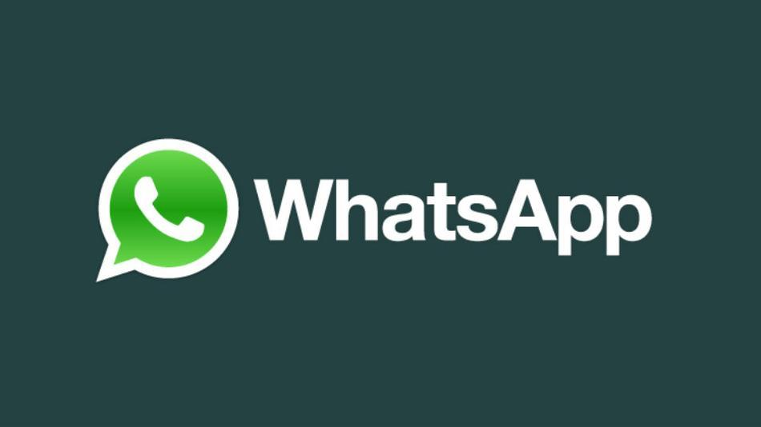
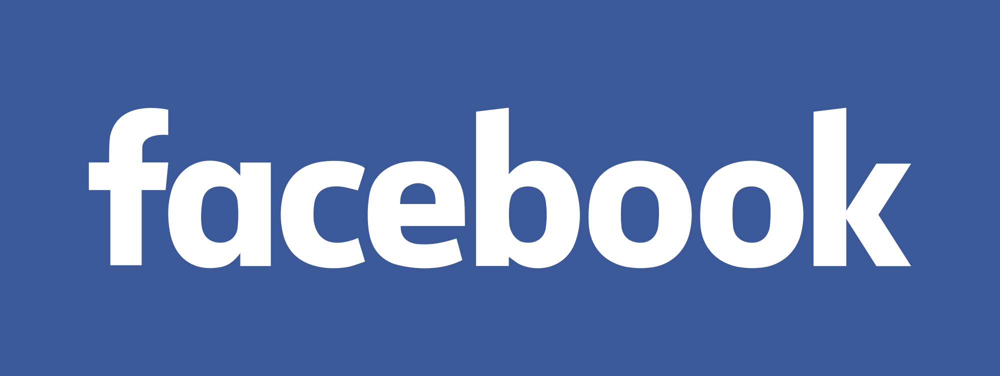
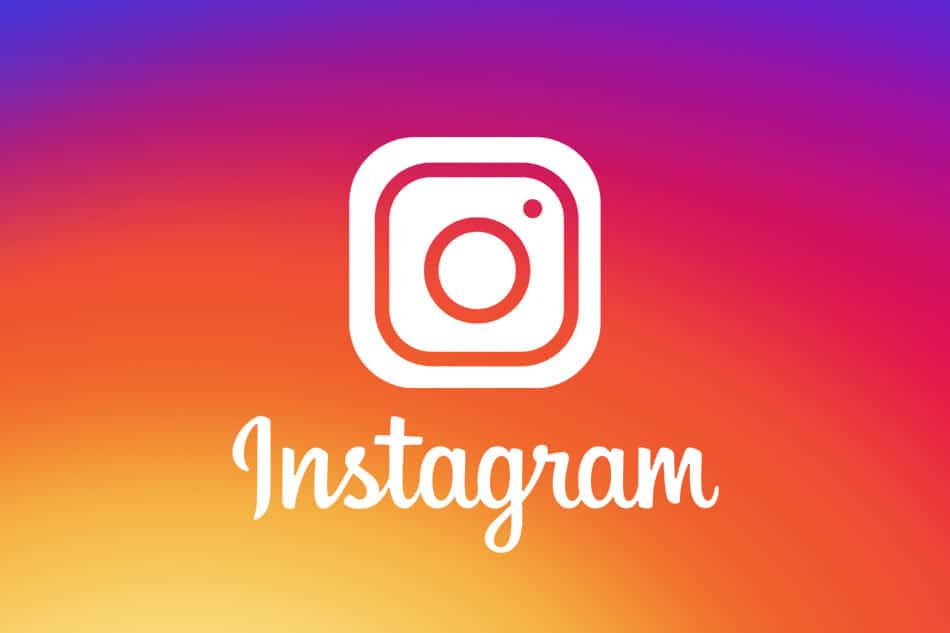

1
YOUTUBE
2,80 miliardi di utenti attivi mensili
Società informatica fondata nel 2005 e dalla fine del 2006 di proprietà della Google inc. Il suo sito Internet è il principale
strumento di condivisione di filmati della rete: ogni utente può mettere on-line, senza controllo preventivo da parte del sito,
i propri filmati e visionare quelli inseriti dagli altri. Il sito è stato spesso al centro di contestazioni, in particolare
legate all'inserimento di filmati coperti da diritto d'autore o per la violazione della privacy.
2
WHATSAPP
2 miliardi di utenti attivi mensili
Applicazione di messaggistica istantanea per dispositivi mobili multipiattaforma che, attraverso la connessione a Internet,
consente lo scambio tra uno o più utenti di messaggi di testo e file multimediali. Scaricabile e utilizzabile gratuitamente per un periodo
di dodici mesi, al termine dei quali è stato inizialmente necessario sottoscrivere un abbonamento del costo annuo inferiore a un euro,
abolito a partire dal 2016, l’applicazione è stata creata nel 2009 da J. Koum e B. Acton, e al giugno 2013 ha registrato un traffico pari
a 27 miliardi di messaggi al giorno, soppiantando di fatto la messaggistica via SMS e arrivando a contare 450 milioni di utenti.
Nel febbraio 2014 il fondatore e amministratore delegato di Facebook M. Zuckerberg ha annunciato l'acquisizione di W. per 19 miliardi di
dollari, assicurando che la app continuerà a operare in forma indipendente mantenendo il proprio marchio. Dall'aprile 2015 l'applicazione
ha reso disponibile il servizio di chiamate VoIP per i dispositivi Android e iOs, mentre dal 2016 - data in cui ha superato il miliardo
di utenti - ha introdotto la possibilità di condividere documenti PDF in chat, iniziando a utilizzare la crittografia end-to-end per
proteggere i messaggi di chat e le chiamate vocali, garantendo così maggiore sicurezza agli utenti; nello stesso anno sono state lanciate
due nuove app che hanno permesso di utilizzare il servizio su Mac e PC, sincronizzandoli con lo smartphone. La versione rilasciata nel
2021 consente di inviare e ricevere da un altro dispositivo anche nel caso in cui lo smartphone non sia collegato alla rete dati; allo
stesso anno il numero di utenti attivi è di1 miliardo e 600 milioni, distribuiti in oltre 180 Paesi.

3
FACEBOOK
2,70 miliardi di utenti attivi mensili
Sito web fondato nel febbraio 2004 da M. Zuckerberg e D. Moskowitz. Nato come rete di interazione fra studenti universitari statunitensi,
ha gradualmente esteso la sua utenza all’intera rete telematica ed è divenuto il principale social network presente in Internet.
In ragione delle sue numerose applicazioni (chat, condivisione di file, video, foto), il sito conta al giugno 2021 2,8 miliardi di utenti
mensili attivi (1,84 miliardi attivi quotidianamente). Quotato in borsa dal maggio 2012 con una delle offerte pubbliche di vendita più
ingenti della storia degli Stati Uniti, negli anni successivi il social network è stato al centro di controversie rispetto a un suo
possibile utilizzo come mezzo di controllo e di acquisizione di dati sensibili, e più recentemente per le accuse di gravi violazioni
interne sul piano etico. Nell'ottobre 2021 Zuckerberg ha annunciato un cambio di denominazione della società che controlla la piattaforma
in Meta Platforms, Inc., annunciando la creazione di una zona di convergenza di spazi virtuali interattivi definita metaverso.

4
INSTARGRAM
oltre 2 miliardo di utenti attivi mensili
Applicazione ideata da K. Systrom e M. Krieger, disponibile dal 2010 per i dispositivi iOS e dall’aprile 2012 anche per gli Android. I.
consente di scattare fotografie con il proprio smartphone per poi ritoccarle e pubblicarle online, condividendole anche su social network
(come Twitter o Facebook) o piattaforme (per esempio Tumblr); in appena due anni ha superato i venticinque milioni di utenti e ha
rivoluzionato la condivisione delle immagini via web. Nell'aprile del 2012 M. Zuckerberg ha annunciato l’acquisto di I. da parte di
Facebook per un miliardo di dollari e a settembre dello stesso anno l'acquisizione è stata completata per 741 milioni. Nel 2021 Instagram
ha superato 1 miliardo di utenti attivi, e oltre 500 milioni di accessi quotidiani.

5
TWITTER
Twitter ha 330 milioni di utenti attivi mensili
Sito internet che fornisce un servizio gratuito di social network e microblogging. Gli iscritti possono inviare messaggi di testo lunghi
al massimo 140 battute, dal 2017 280 battute. Il nome deriva dal verbo inglese to tweet («cinguettare»). Il prototipo di T. venne creato
a San Francisco nel marzo 2006 da J. Dorsey, E. Williams e B. Stone e fu utilizzato come servizio di comunicazione interna per i
dipendenti del sito internet Odeo.com.; la versione aperta al pubblico fu lanciata nel luglio dello stesso anno, e a ottobre i tre
fondatori e altri membri di Odeo costituirono la società Obvious corporation che poi acquisì tutti i beni di quella di partenza, tra cui
il sito Twitter. Per utilizzare T. è necessaria una registrazione. I messaggi sono pubblici, cioè visibili da tutti gli internauti.
Gli iscritti possono aggiornare il proprio profilo tramite il sito stesso oppure via sms, con programmi di messaggistica, e-mail o
applicazioni ad hoc. Gli iscritti a T. sono singoli internauti, ma anche aziende, associazioni, gruppi, partiti politici, personaggi
dello spettacolo e dello sport. I tweet dell’utente vengono visualizzati da chi ha scelto di seguirlo (follow), tuttavia un motore di
ricerca interno al sito permette di navigare per parole chiave e di aggiungere nuovi internauti alla propria lista di contatti.
Al 2021 il servizio conta 1,3 miliardi di account e 330 milioni di utenti attivi mensili.

6
GENERATORE RANDOM DI PAPERE
7
SPOTIFY